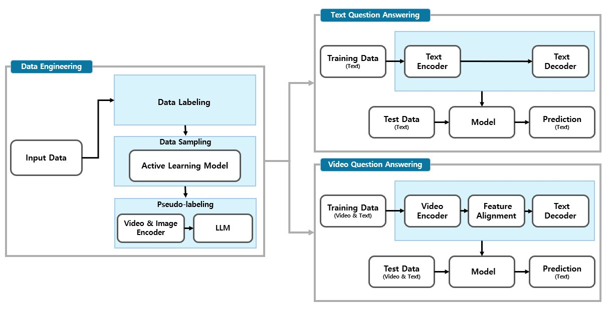
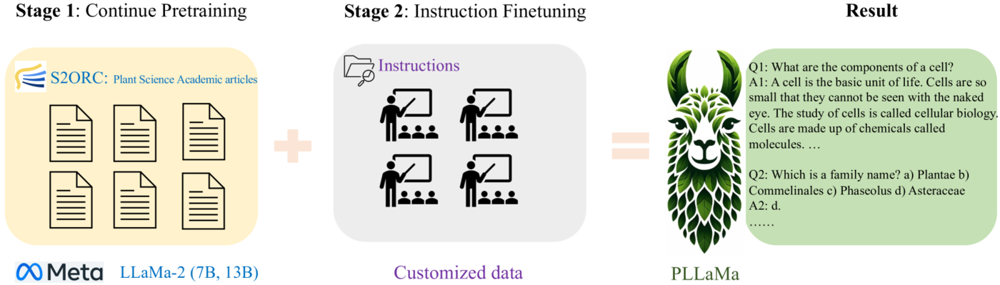
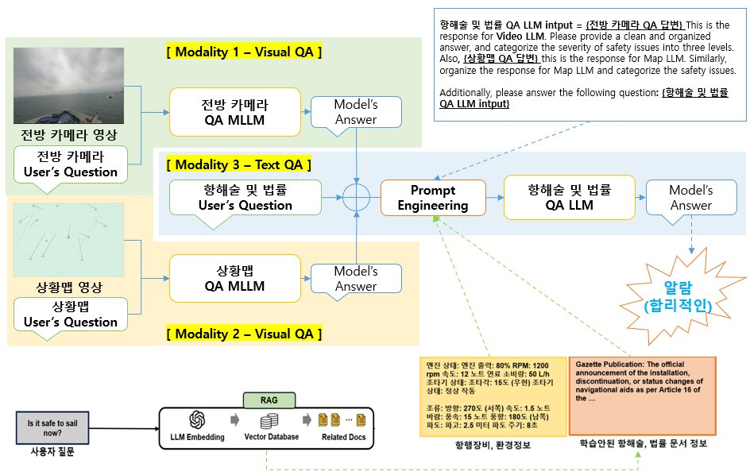
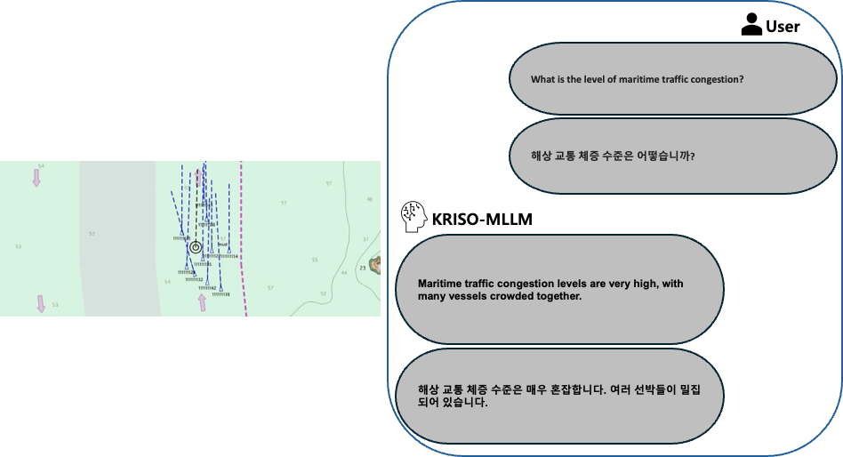

해상교통 기반모델 및 멀티모달 종합추론 모델 개발
해양 특화 LLM과 Vision-LLM을 결합해 항해 동영상·상황맵·항해 법령을 종합 추론하는 해상 운항 지원 시스템(ANAS) 기반모델 연구개발.
Overview
본 과제는 해양 안전을 위한 대규모 언어 모델(LLM)과 멀티모달 대규모 언어 모델(MLLM)을 활용하여, 해상 운항을 지원하는 Advanced Navigation Assistance System (ANAS) 개발을 목표로 한다. 육상의 ADAS가 센서·카메라로 주변 환경을 감지해 운전자를 보조하듯, 해상 교통 환경을 인식하는 자연어·이미지 기반 모델(foundation model)을 연구개발하고, 이를 결합한 다중 모달리티 종합 추론 인공지능 모델을 개발하는 것을 핵심 목적으로 한다.
해양 데이터는 육상/생활 데이터에 비해 환경적 특수성과 센서 모달리티의 다양성이 크고, 접근성이 낮아 대규모 취득이 어렵다. 이러한 데이터 부족 문제에 대해, 적은 데이터로도 도메인 특화가 가능한 기반 모델의 few-shot / zero-shot 특성이 해양 특화 AI 개발에 적합하다는 점에 착안하였다. 과제 범위는 각 모달리티별 기반 모델의 개발·검증, 이를 활용한 멀티모달 종합 추론 모델의 개발·검증, 데이터셋 구축 지원, 그리고 개발 모델을 탑재한 항해 지원 시스템 프로토타입 개발까지를 포함한다. 수요기관은 한국해양과학기술원 부설 선박해양플랜트연구소(KRISO)이다.

Approach
- 항해술 & 법령 Text QA — 해양 도메인 특화 LLM(LLaMA-3.1 8B)을 사전학습(PT)·미세조정(SFT)하여 항해술·법령 질의응답을 학습.
- 전방 카메라 항해 동영상 Video QA — Video-LLM(LLaMA-VID 계열)을 채택해 전방 카메라 항해 동영상에 특화된 비디오 질의응답을 학습.
- 상황맵(Situation Map) Visual QA — 동일 계열 Video-LLM으로 상황맵 영상/이미지에 대한 질의응답을 학습하여 선박 위치·항로·충돌 위험 등을 추론.
- 데이터셋 전처리 — 원시 Text/QA를 학습 가능한 형태로 정제하고, GPT를 활용해 학습에 부적합한 데이터를 필터링.
- 멀티모달 종합 추론 시스템 — 항해 동영상·상황맵·항해술/법령 모델의 출력을 Prompt Engineering으로 결합해, 물리적 상황 인식에 항해술·법령 지식을 더한 가이드라인을 생성하고 안전 이슈의 심각도를 3단계로 분류.
- 실시간 연동 데모 프로토타입 — 해상 영상과 상황맵 서버 영상을 실시간으로 수신해 추론하고, 전방 카메라·상황맵·항해 법령 입력을 종합하는 데모 UI를 구성.
Methods & Tech
Results
항해술·법령 Text QA에서는 도메인 특화 LLM이 학습 전 답변하지 못하거나 부정확하던 질문(예: 군산항 선석의 최대 활하중 3.0 t/m², 해상 조난·안전 통신 주파수 2,182/4,125 kHz 등)에 대해 정답에 부합하는 응답을 성공적으로 생성함을 확인하였다. 추론 메모리는 약 16.1 GB, CPU 추론 속도는 약 25초이며, GPU 가동을 위해서는 A6000급(30 GB 이상) GPU가 필요한 것으로 확인되었다.
Video QA / 상황맵 QA(LLaMA-VID 기반)는 추론 메모리 약 13.2 GB, 추론 속도 약 2초로, 동영상 내 장애물 인식, 자선(ownship) 식별, 항해 수역(연안/항구/좁은 수로) 판단, 간단한 충돌 위험 평가 등에서 성공 사례를 보였다. 다만 선박 개수 등 구체적 정량 정보를 요구하는 질문이나 give-way/stand-on 판단, 혼잡도 추정 등에서는 한계(실패 사례)도 관찰되었다.
종합 추론 시스템은 세 모델의 출력을 Prompt Engineering으로 통합해 깔끔하게 정리된 답변과 3단계 안전 심각도 분류를 제공하였다. 항해·법률처럼 전문성이 요구되는 분야에서 도메인 특화 모델을 조합한 종합 추론이 신뢰도 높은 정보 제공과 안전한 의사결정 지원에 유효함을 PoC로 입증하였다.


